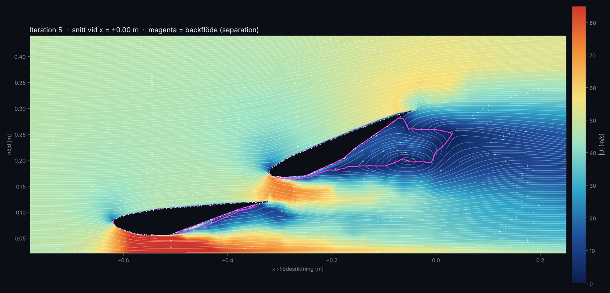

En tvåelements framvinge som jag ritade från grunden och förbättrade i fem CFD-iterationer. Målet var mer downforce per newton drag. Varje designändring bygger på vad strömningsbilden visade i föregående körning, främst var och varför flödet släpper från vingen.
Det här var mitt första egna aerodynamikprojekt. Jag ville lära mig hur en framvinge faktiskt arbetar nära marken genom att designa en själv, simulera den och läsa resultaten kritiskt i stället för att bara titta på krafttalen.
Vingen har två element: ett främre huvudelement nära marken och ett bakre element (flap) högre upp, samt ändplattor. Markeffekten gör att luften accelererar under vingen och ger ett lågt tryck där, och det är det som genererar downforce. Problemet är att för mycket vinkel eller för lite luft mellan elementen får gränsskiktet att släppa. Då tappar vingen sug och drar i stället mer.
Arbetsflödet var detsamma i varje iteration:
| Verktyg | Siemens NX, SimScale (OpenFOAM), egen efterbehandling i Python/VTK |
|---|---|
| Analys | Inkompressibel, stationär, SIMPLE |
| Turbulensmodell | k-ω SST |
| Hastighet | 50 m/s (180 km/h) |
| Mark | Väggrandvillkor under vingen |
| Spännvidd | 1,2 m mellan ändplattorna |
| Beräkningsdomän | 6 × 8 × 2 m (iteration 1: 3,2 × 6 × 2,2 m) |
| Nät | 1,22–1,74 miljoner celler |
Krafterna är medelvärden över de sista 30 % av varje körning, eftersom lösningarna pendlar några procent även när de är konvergerade. Jag hämtade dem från SimScales krafthistorik och kontrollerade dem genom att integrera trycket över vingytan i de nedladdade resultatfälten. De två metoderna skiljer sig mindre än 1 %.
N, medel sista 30 %
downforce / drag
liter flöde med Uy > 0 runt vingen
Downforce [N] under lösarens 1000 iterationer. Iteration 2 sparade bara fem punkter.
| Iteration | Geometri | Downforce [N] | Drag [N] | L/D | Backflöde [L] | Lägsta Cp | Celler |
|---|
Varje steg visar vad jag ändrade, vad som hände och vad strömningsbilden visade. Snitten är tagna mitt på spannet (x = 0) och nära ändplattan (x = 0,40 m). Det magentafärgade området är backflöde, alltså där luften strömmar bakåt längs vingen eftersom gränsskiktet har släppt.
Iteration 2 visade det tydligast: mer anfallsvinkel gav 30 % mindre downforce eftersom båda elementen stallade. Den största förbättringen kom när jag minskade vinklarna och lät luften följa profilerna.
Nära ändplattorna låg flödet an på bakre elementet, men mitt på spannet släppte det. Ett enda snitt räcker inte för att avgöra om en vinge fungerar. Jag tittar numera alltid på flera positioner längs spannet.
Lösningarna pendlar ±3–4 % och en körning divergerade helt. Med medelvärden och en oberoende kraftberäkning visade det sig att iteration 3 och 4 gav lika mycket downforce inom bruset (1 752 mot 1 774 N). Ändringen i iteration 4 gav alltså ingen verklig vinst.
Iteration 5 är den bästa versionen hittills, men snitten visar tydligt var det finns mer att hämta.
